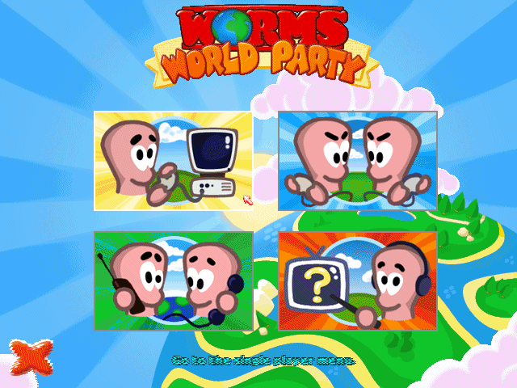
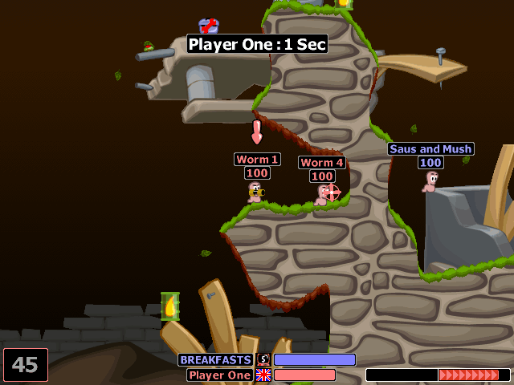

名稱：百戰天蟲：世界大戰／世界派對 (簡中／英文版)
簡介：Team 17 2001年出品的回合制戰術遊戲，由Titus代理發行。2015年再經由Steam推出
「重製版（Remastered）」 [待補]。


保護：光碟
備註：VirtualBox無法執行，虛擬機請使用VMware。
備註：簡中版其實只有安裝／啟動的選單是簡中（必須執行光碟上的AutoGSoo.exe才會自動
翻成簡中），實際遊戲內容仍為英文。
檔案：wwp.rar = 重製版（英文）